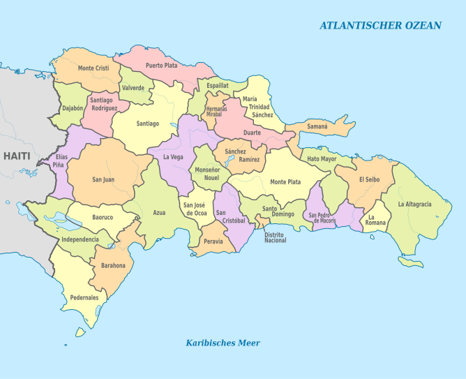
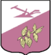
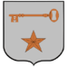
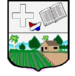
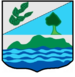
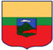
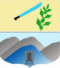

Dominican Republic

- Azua
- Senator: Lía Ynocencia Díaz Santana
- Population: 256,981

- Bahoruco
- Senator: Melania Salvador Jiménez
- Population: 118,987
- Barahona
- Senator: José Manuel del Castillo Saviñón
- Population: 226,898

- Dajabón
- Senator: David Rafael Sosa Cerda
- Population: 67,887

- Santo Domingo
- Senator: Antonio M. Taveras Guzmán
- Population: 2,995,211

- Duarte
- Senator: Franklin Martín Romero Morillo
- Population: 384,789
- 
- Elías Piña
- Senator: Aris Yván Lorenzo Suero
- Population: 70,589
- 
- El Seibo
- Senator: Santiago José Zorrilla
- Population: 115,889
- Espaillat
- Senator: Carlos Manuel Gómez Ureña
- Population: 390,478

- Hato Mayor
- Senator: Cristóbal Venerado Castillo
- Population: 89,578
- Hermanas Mirabal
- Senator: Bautista Antonio Rojas Gómez
- Population: 103,974
- 
- Independencia
- Senator: Valentin Medrano Pérez
- Population: 54,785

- La Altagracia
- Senator: Virgilio Cedano Cedano
- Population: 335,677

- La Romana
- Senator: Iván José Silva Fernández
- Population: 330,587

- La Vega
- Senator: Ramón Rogelio Genao Durán
- Population: 420,478
- María Trinidad Sánchez
- Senator: Alexis Víctoria Yeb
- Population: 140,784

- Monseñor Nouel
- Senator: Hector E. Acosta
- Population: 201,474

- Monte Cristi
- Senator: Ramón Antonio Pimentel Gómez
- Population: 135,710
- 
- Monte Plata
- Senator: Lenin Valdez López
- Population: 200,454

- Pedernales
- Senator: Dionis A. Sánchez Carrasco
- Population: 38,941

- Peravia
- Senator: Milcíades M. Franjul
- Population: 298,747
- 
- Puerto Plata
- Senator: Ginnette Altagracia Bournigal
- Population: 490,733
- Samaná
- Senator: Pedro Catrain Bonilla
- Population: 168,265

- Sánchez Ramírez
- Senator: Ricardo De Los Santos
- Population: 157,457
- 
- San Cristóbal
- Senator: Franklin Alberto Rodríguez
- Population: 859,741

- San José de Ocoa
- Senator: José Antonio Castillo Casado
- Population: 82,458

- San Juan
- Senator: Félix Bautista Rosario
- Population: 300,476

- San Pedro de Macorís
- Senator: Franklin Peña Villalona
- Population: 418,850

- Santiago
- Senator: Eduardo Estrella Virella
- Population: 1,833,451

- Santiago Rodríguez
- Senator: Casimiro Antonio Marte Familia
- Population: 164,941

- Valverde
- Senator: Martín E. Nolasco Vargas
- Population: 207,447